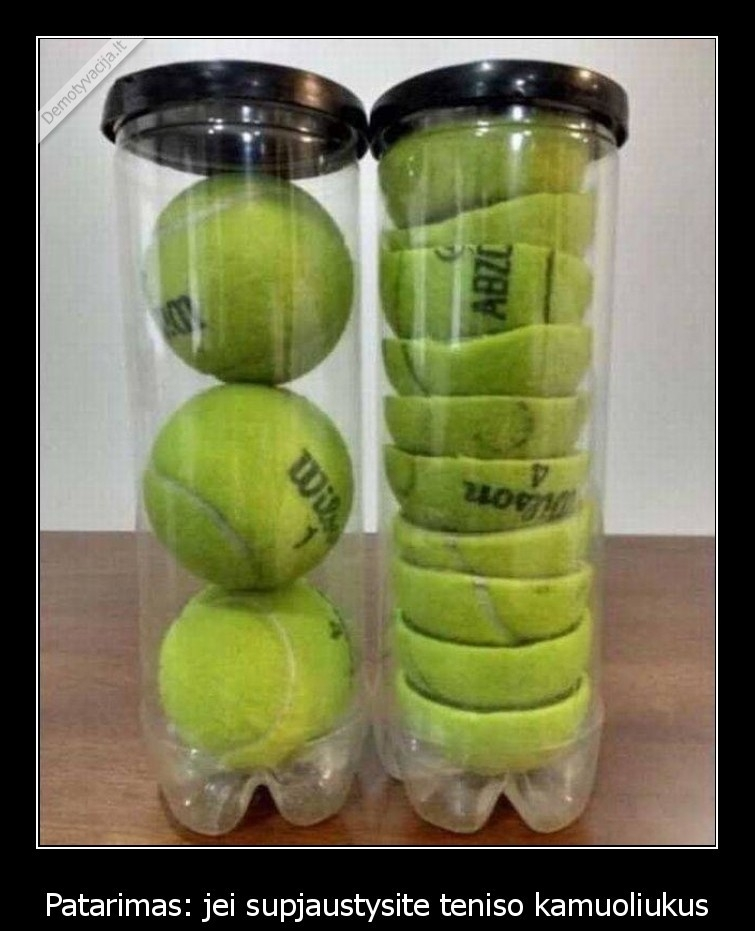

kamuoliukus
About me

Past Articles
- Vaginaliniai kamuoliukai - Aistra
Visiems linksmas pramogų mėgėjams, mes galime pasiūlyti įdomų žaidimą! Rasite neįprastą istoriją ir dizainą. - Vaginaliniai kamuoliukai: ką apie juos reikia žinoti ...
Kamuoliukus čiumpi, „bumčikus“ turi! Nuo 2019 m. vasario 4 d. iki 2019 m. kovo 31 d. registruokis žaidime perkant bent vieną iš išvardintų „Taffel“ produktų (pažymėtų arba nepažymėtų specialiu žaidimo lipduku): - Ramunėlės kamuoliukus su savo rankas - ATOMIYME.COM
Po to pasiruoštus vynuogių-sūrio kamuoliukus apvoliojame riešutų trupiniuose. Sudedame gautus vynuogių kamuoliukus ant lėkštės bei padedame į šaldytuvą. Prieš patiekdamos, palaikome kambario temperatūroje. Lepinamės! 5. Pastebėjimas: Tobulas užkandis ilgam vakaro pasisėdėjimui prie vyno. ;) 6. - Kaip virti kamuoliukus - lt.srathbun.com
teko išbandyti visokiausius kamuoliukus, kad tik tas išrankus vaikas valgytų.. šis eksperimentas išėjo vykęs, tik aišku, ne kasdienai.. varškės pusė kilo ( tryse labai greit suvalgėm, tai galima ir daugiau) sojos dribsnių gal 2 stiklinės; 1 ar 2 kiaušiniai; 1/2 stiklinės miltų (dedu spelta, arba rupūs miltai tinka) druskos ... - Sūrio-vynuogių kamuoliukai. Vyno draugai.
Žaidimo paleidimo golfo kamuoliukus. Jūs turite pradėti munite golfo kamuoliuką, kiek įmanoma.Kontrolė. : Žaisti su pele. - Kamuoliukus čiumpi, "bumčikus" turi! - Taffel
Kamuoliukus reikia paimti ir švelnia eiga įsidėti į savo vaginalinę angą. Nepamirškite lubrikanto, kurį taip pat galite įsigyti Fantazijos.lt e-parduotuvėje. Jūsų rutuliukai yra skirti vaginai, todėl oraliniams arba analiniams malonumams jie nėra visiškai pritaikyti. Kamuoliukus įsikišus, bandykite juos ten išlaikyti. Kartokite. - Zuma žaidimas kamuoliukus - Zumisland - Jeux de Zuma
Kaip virti kamuoliukus Šukutės, kaip ir visos jūros gėrybės, yra labainaudinga ir maistinga. Jų subtilus saldus skonis bus vertinamas kiekvieno jūros gėrybių mylėtojo. Bet norėdami gauti skanų patiekalų, turėtumėte žinoti, kaip virti kamuoliukus.</ p> - Vaginaliniai kamuoliukai, rutuliukai pigiau - Fantazijos.lt
„Turėdavome tradiciją sekmadienio rytais kepti blynus – vaikas vis prašydavo, o dabar juos teks dažnai užmaišyti iš vakaro“, – juokauja aktorius Džiugas Siaurusaitis (48 m.). - kamuoliukai | ką valgyti?!
Zuma žaidimas kamuoliukus. Gather identiškas kamuoliukus į grupes po 3 ar daugiau, kad jie išnyksta.Kontrolė. : Naudokite pelę, mesti kamuolį .. - Žaidimo paleidimo golfo kamuoliukus - Puttix
Kai kurie žmonės renkasi iš dviejų ar daugiau rutuliukų pagamintus vaginalinius kamuoliukus, tuo tarpu kiti teigia, jog naudoti vieno kamuoliuko žaisliuką yra daug patogiau, kadangi jis mažiau linkęs išslysti. Taip pat renkantis vaginalinius kamuoliukus, atkreipkite dėmesį į jų dydį ir svorį.
Menu
- Vaginaliniai kamuoliukai - Aistra
- Vaginaliniai kamuoliukai: ką apie juos reikia žinoti ...
- Ramunėlės kamuoliukus su savo rankas - ATOMIYME.COM
- Kaip virti kamuoliukus - lt.srathbun.com
- Sūrio-vynuogių kamuoliukai. Vyno draugai.
- Kamuoliukus čiumpi, "bumčikus" turi! - Taffel
- Zuma žaidimas kamuoliukus - Zumisland - Jeux de Zuma
- Vaginaliniai kamuoliukai, rutuliukai pigiau - Fantazijos.lt
- kamuoliukai | ką valgyti?!
- Žaidimo paleidimo golfo kamuoliukus - Puttix
Kamuoliai žaidimai internete - žaisti nemokamai žaidimas žaidimas

× Kamuoliai žaidimai
Buvo momentas,? Kodėl gi ne pradėti internetinis žaidimas kamuoliukų? Gameplay yra pateikti nemokamai, ir jūs tikriausiai žinote, kaip jį žaisti. Keletas variantų, ir visur turi savo stilių valdymą. Kartais kaupiasi Vienspalvis elementų grandine, kitą kartą, šaudyti juos iš patrankos. Kai rutuliai yra vietoje, kiti yra nuolat juda, bet tai užima tą patį šabloną – iš anksto ar aplink tam tikrą ašį. Naujas lygis atveria naujas galimybes atsirasti bonus kamuoliukus, kad gali sulėtinti judėjimą arba sunaikinti bet kokią grupę.
4.3 1 2 3 4 5 (Total 11)Geriausiai Kamuoliai žaidimai
Bubble shooter html5 Rutuliai - Bubble shooter Tarzan kamuolys Fruita Braukimas 2 Burbulai žiurkėnas Red Ball 4 - tomas 3 Raudoną rutulį 5 Red Ball 2 Red Ball Burbulas Hit Amigo Pancho Ninja dailininkas 2 123 Draugas Pancho 5: Arkties ir Peru Jungtinės Kamuoliai IQ Ball O formos Ninjas Ekstremalios Burbulai Factory Balls Spalvinga pasaulio Woobies Žiema Rožinės spalvos dėmės Smiley Nuotykių Zodiako magija Speedy Bubbles Bokštas gynybos nuo keturi rutuliai Zoom su lokiu Atšokti Klasikinis Bubble Shooter Burbulas talismanai Energetinės rutuliai Little Jane Lygiosios kelias Burbulas suktuko Isoball X1 Bubble Trouble Šuniukas burbuliukai Strėlės balionas Burbulas ratų Burbulas derinys Džiunglės Ball Mad formos 3 Jokers burbulas išminties Unitaznye rutuliai Velykų burbulas Spalva Joy Bubble Shooter Dino Bubble Shooter Kalėdos Bouncy patranka Šaulys burbulas: piratų Archibald Civiballs 2 Herojiškas burbulas 3D Kupidonas burbuliukai Bubbleween Angry birds biliardas Ninja teisėjas burbulas dvasia Jūs galite padaryti labirintą Burbulai TSRS Ping Pong Šaulys Magic Balls 2 iPlayer: Indy Kačių Dora: Bubbleshooter Slam Dunk manija Burbulai 9 Dragons Mind Your Marbles Kempiniukas Super Archer Smurf Kamuoliai Nuotykių Nuotykių kamuolys Bubble Rezultatas: Helovynas 1 2 3 4 ... 37 38 >Žaidimai Kamuoliai Kategorija:
Įgūdis Online žaidimai Puzzle Protingas 3 iš eilės Trys iš eilės Paprastas Žaidimų kamuoliai Fotografavimo berniukų Burbulai Mokymo Ginklai 7 metai Veikla Šokinėjimas Labirintai Zuma Renkant daiktų Nuotykiai Spalvos blokų Arkanoid Linijos Šaudyklės Veiksmo Berniukai Plotas Nuo per atstumą BiliardasNaujausios Kamuoliai žaidimai
Baisus Helovino šaulys Helovinas šaulys Pop-Pop Jingle Helovino kaukolės šaulys Piyopiyo Mikio triukas ar skanėstai „Disney Bubble Burst“ „Bubble Shooter“ Afrika Baseino burbulai Burbulų bokštas 3D Burbulų urvas MK - „Aqua Bubble Shooter“ Spalvoto rutulio atitikimas Grindų dažai Stebuklingi rutuliai Zuma džiaugsmasPosted by Jack  Read more
Read more  Comments (15)
Comments (15)  2020.10.29 11:32
2020.10.29 11:32